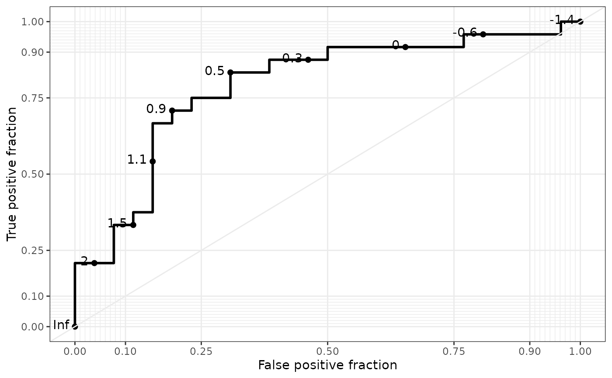
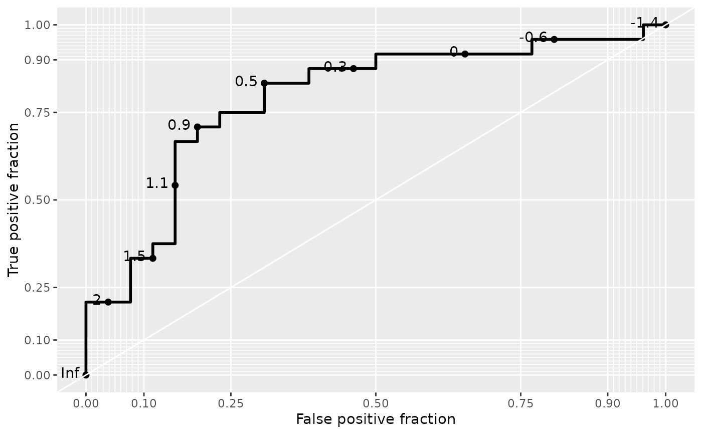

Adds a diagonal guideline, minor grid lines, and optionally direct labels to ggplot objects containing a geom_roc layer.
Arguments
- major.breaks
vector of breakpoints for the major gridlines and axes
- minor.breaks
vector of breakpoints for the minor gridlines and axes
- guide
logical, if TRUE draws diagonal guideline
- guide_col
character, if guide is TRUE sets colour of diagonal guideline. Takes precedence over colour set by a theme.
- xlab
X-axis label
- ylab
Y-axis label
- theme
Theme function compatible with ggplot2
Examples
D.ex <- rbinom(50, 1, .5)
fakedata <- data.frame(M1 = rnorm(50, mean = D.ex),
D = D.ex)
ggplot(fakedata, aes(m = M1, d = D)) + geom_roc() + style_roc()

ggplot(fakedata, aes(m = M1, d = D)) + geom_roc() + style_roc(xlab = "1 - Specificity")
ggplot(fakedata, aes(m = M1, d = D)) + geom_roc() + style_roc(theme = theme_grey)
